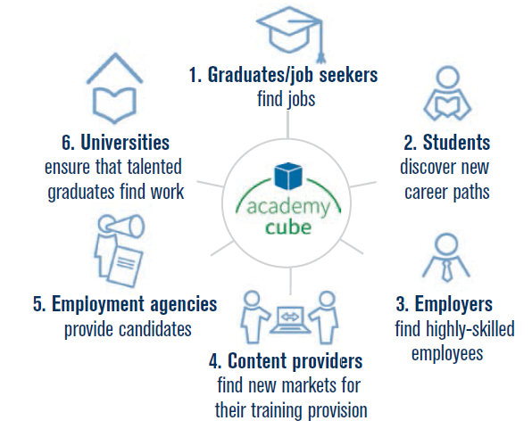

返回主页
Figure 12: Networking different actors though the Academy Cube

Figure 5: Results of survey on Industrie 4.0 trends (January 2013)
Figure 6:Horizontal integration through value networks；Figure 7: End-to-end engineering across the entire value chain
Figure 8: Vertical integration and networked manufacturing systems
Figure 9: Reference architecture for connecting the Internet of Things with the Internet of Services
Figure 10: Examples of the different perspectives included in the Industrie 4.0 reference architecture
Figure 11: Example reference architecture for a CPS platform
Figure 13: Mechanical engineering industry sales in selected countries
Figure 14: Provisional organisational chart of the “Industry 4.0” Platform
德国的工业4.0
INDUSTRIE 4.0（协议）
version:1.0; jobnet@188.com © retter2012.com